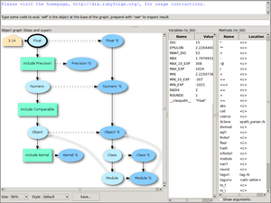
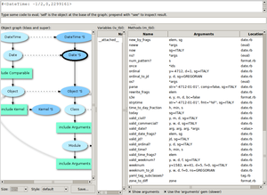
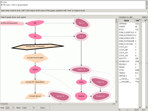
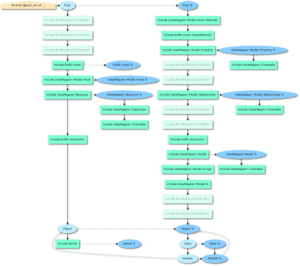
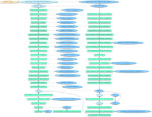

Gallery
{kind=link}

{kind=link}

{kind=link}

{kind=link}

{kind=link}

DrX, the good doctor, is a small object inspector for Ruby.
DrX is for newbies and gurus alike.
Instead of focusing on the contents of your object, DrX instead focuses on its object model. As a result, DrX is most suitable for programmers wishing to understand Ruby's object model better. It's especially adept at showing you how a "magical" library works (e.g., DataMapper).
At your system prompt type:
gem install drxJust require 'drx' in your program and do
some_object.see to investigate that object:
require 'rubygems' require 'drx' "wizard of oz".see Math::PI.see Enumerable.see s = "wizard of oz" def s.strong "<strong>" + self + "!</strong>" end s.see
And see the Key bindings section for what you can do in DrX's window.
You can use either the "new" Tk (version 8.5), or the "old" one (version 8.4).
However, if you use the "old" one, you must also have the Tile extension installed.
For example, on Ubuntu do sudo apt-get install tk-tile. Alternatively, as a very last
resort, use an old version of DrX which doesn't necessitates Tile
(that's any version earlier than 0.4).
If the graphs DrX produces have ragged lines, it means your GraphViz doesn't have
anti-aliasing support. A quick way to solve this on Ubuntu is by doing
sudo apt-get install graphviz-cairo.
Make sure GraphViz' 'bin' folder is in your $PATH.
(A note to MS-Windows users: DrX was installed sucessfully under: RubyInstaller + DevKit; Tk from ActiveState and bindings via tk_as_gem.)
DrX can show you the arguments methods expect. While this is not
needed, DrX can work more effectively if you install the "arguments"
and/or the "methodpara" gems. In short, do gem install
rdp-arguments and gem install methopara.
The object graph shows the object model. Ruby objects have two "pointers":
Correspondingly, the object graph shows [at most] two arrows pointing out of an object: the klass arrow is shown as a dotted arrow, and is usually pointing to the right (horizontal); and the super arrow is shown as a solid arrow, and is usually pointing down (vertical).
When you see a horizontal arrow, think of it as "here are the methods the object responds to"; and when you see a vertical one, think "here are additional methods".
Eventually you'll recognize that most graphs contain two (vertical) main lines of inheritance: one for "normal" classes and one for their corresponding "singleton" classes. This is how Ruby's object model is designed.
To prevent clutter, DrX doesn't show you absolutely
all pointers. For example, you'll notice, in the screenshots, that
Kernel's singleton doesn't point to its super, Module.
It is extremely unlikely that you'll want to see the few components DrX
decides not to show. The fully-documented methods
display_klass? and display_super?, in
lib/drx/graphviz.rb, govern what to show.
(This is true for the default style only.)
A Ruby object has a variables table associated with it. The
variables pane lists the content of this table. It is customary to think
of this table as holding instance @variables @like
@this, but in fact Ruby stores here also constants
("namespaces") and @@class_variables. The pane shows the raw
contents of this table.
A Ruby object, if it's a class or a module, also holds methods. These are stored in a methods table. The methods pane shows the contents of this table.
For our first example, let's suppose you have the following DataMapper code...
require 'rubygems' require 'dm-core' # # This is part of a blogging website. Users write posts. A post # belongs to a user. # class Post include DataMapper::Resource property :post_id, Serial property :title, String property :body, Text belongs_to :user end class User include DataMapper::Resource property :user_uid, Serial property :name, String property :mail, String end
...and you wish to know what a Post object consists of. You'd append the following code...
post = Post.new require 'drx' post.see # Or just do Post.see
...and you'd get a window showing you the following graph (click to enlarge).
In the graph you'll notice two distinct lines of hierarchy. One describes the Post class: most importantly it contains the DataMapper::Resource module. The other line describes the Post class' singleton: most importantly it contains the DataMapper::Model module. Take a moment to click these two modules and examine the methods they contain.
Let's talk more about our Post class. We merely did include
DataMapper::Resource in its body and we see that it's acquired
gazillions of things. We want to know why this had happened.
Specifically, we want to know how DataMapper::Model got there. We
suspect that DataMapper::Resource does this magic in its
#included, and we want to verify this theory.
In other words, we want to peek into DataMapper::Resource's singleton. Click the "DataMapper::Resource 'S" oval (that's the singleton) to inspect its methods:
Aha! We see that it indeed has an included method
defined. Double click on the method to open it up in an editor (as
demonstrated in the screenshot). Yep, our suspicion was correct: the
Model module is added to our Post class by
Resource.included. The mystery is solved!
Launch DrX's GUI (for example, by doing ''.see). At the
eval line type require 'sinatra'. Then type see
Sintra. (Alternatively, type require 'sinatra' at
IRB's prompt and then Sinatra.see.) In the variables table
you'll see all the sub-modules and classes defined under the Sinatra
module. Double-click any of them to investigate it. When you're finished
with one, right-click over the graph to go back.
You can open multiple DrX windows by doing
some_object.see at the eval line. For example, you may do
self.see to duplicate the window. Note, however, that Ruby
seems to have a glitch: doing #instance_eval on an object,
which is what DrX does when you eval something, forces a singleton for
it. You'll see this artefact in the diagram.
Here is how objects are defined internally in MRI ruby (from ruby.h):
struct RBasic {
unsigned long flags;
VALUE klass;
};
struct RObject {
struct RBasic basic;
struct st_table *iv_tbl;
};
struct RClass {
struct RBasic basic;
struct st_table *iv_tbl;
struct st_table *m_tbl;
VALUE super;
};
What DrX does is show you these four slots: the 'klass', the 'super', the 'iv_tbl', and the 'm_tbl'.
Additionally, if RBasic::flags has the
FL_SINGLETON bit turned on, DrX will report the class as a
singleton. Note, however, that singletons are just like ordinary
classes, and I'm aware of the fact that painting them differently (in
the object graph) might give a false impression that they are somehow
special.
When you double-click a method, DrX launches the command gedit +%d "%s"
by default (%d and %s are substituted by the line-number
and file-name). If you wish to use some other editor, set your
'DRX_EDITOR_COMMAND' environment variable accordingly (or see the next section).
Note that gedit has a bug: it positions the cursor on the correct line, but sometimes it doesn't update the display and still shows the first page of the file. If this happens, click arrow-up, then arrow-down, to update the display. Or use some other editor.
For Ruby 1.8, DrX figures out a method's location by inspecting Ruby's internal nodes. This functionality is contained in a small C extension built when you install the DrX gem. For Ruby 1.9, Method#source_location is used instead, but, unfortunately, for Ruby 1.9 attribute readers/setters are reported as <c> and not as <attr reader> and <attr setter>.
Of course, DrX can't figure out the location of a method written in C.
DrX lets you put your customizations in the file ~/.drxrc. Here's an example:
class Drx::TkGUI::Application
def user_customizations
@eval_result.height = 8 # Enlarge the output area.
@graph_opts[:size] = '60%' # Make the graph smaller.
@graph_opts[:style] = 'crazy'
# Turn on the "Show arguments" checkbox.
@show_arguments_chk.variable.value = 1
end
end
# Use gvim instead of gedit:
Drx::TkGUI::EDITOR_COMMAND.replace('gvim +%d "%s"')
As another example, here's a ~/.drxrc snippet for adding a drop-shadow effect to the object graph.
# The following code adds a shadow to the diagram.
#
# It works by tweaking the command DrX usually executes to also execute
# an ImageMagick utility.
#
# !! Don't use this code if you aren't using a fast computer !!
Drx::ObjInfo::GRAPHVIZ_COMMAND.replace '
dot -Gbgcolor=transparent "{dot}" -Tpng -o "{gif}" -Tcmapx -o "{map}" 2>&1 && \
convert "{gif}" -matte \\( +clone -background black -shadow 60x4+5+4 \\) \
+swap -background white -mosaic "{gif}"
'
# For further explanation, see
# * http://www.imagemagick.org/Usage/thumbnails/#shadow
# * http://www.imagemagick.org/Usage/blur/#shadow
#
# Tip: Decrees the blur (e.g., do "60x2..." instead of "60x4...") if you're
# on a slow computer.
#
# If you're on MS-Windows, replace "&&" with ";".
When you check the "Show arguments" checkbox, DrX shows the arguments the methods expect. DrX uses three different strategies to detect these arguments:
Mathod#paramaters to tell us about
the arguments.Since the "arguments" gem is slow, it's used only if you explicitly check the "Use the 'arguments' gem" checkbox.
Since I'm interested in the (MRI) implementation of methods written in C, I'm planning to make DrX able to locate C methods in MRI's source code. I'll probably use a primitive ad-hoc parser for this.
{kind=link}
{kind=link}
DrX was tested on Ruby 1.8.6 and up. I don't know about earlier versions.